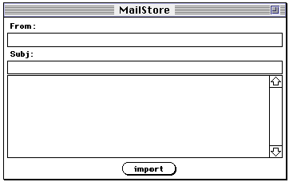
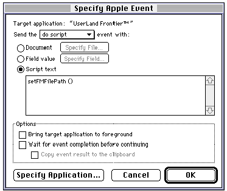

| TOP | UP: Border Crossings | NEXT: External Editors |
In an earlier chapter, we saw how Frontier can make other applications do its bidding by sending them an Apple event (Chapter 32, Driving Other Applications). In this chapter, we turn the tables: other applications can make Frontier do their bidding by sending it Apple events. And this aspect of Frontier, like so many others, is open to user modification; when Frontier receives an Apple event, it calls a script within the database, and you can modify that script. In fact, you can determine what Apple events Frontier can respond to, and how it will respond to them.
There is also a second mechanism by which other applications can drive Frontier. We have seen that if AppleScript is present in the system, Frontier can run AppleScript scripts internally (Chapter 33, AppleScript). By the same token, if Frontier is running, certain applications can run a UserTalk script internally, almost as if the application contained Frontier. The mechanism is parallel to menu sharing (Chapter 26, Menus and Suites), except that with menu sharing, it is the user who is calling Frontier, by choosing from a menu. In this case, the applications themselves are able to initiate UserTalk scripts.
We divide the discussion into three parts. First, we explain how certain applications can run UserTalk scripts internally. Then, we talk about some universal Apple events to which Frontier is prepared to respond, especially the 'dosc' (doScript) Apple event, which even an application with limited scripting abilities may be able to send. Finally, we explain how Frontier can be configured to respond to custom Apple events.
The Open Scripting Architecture (OSA) is a system feature making certain scripting languages (called "OSA dialects") available systemwide, so that applications can ask the system to compile and run scripts written in those languages. UserTalk is an OSA dialect, so it is available as a scripting language from within applications that are OSA-savvy in the right way. Such applications include the Script Editor and HyperCard. Nisus Writer, too, with its Frontier Do Script command, compiles and runs UserTalk scripts through the OSA.
A UserTalk script written in these environments must use the semicolon and curly-braces syntax. When it runs, it runs in the host application's context (so that, as with menu sharing, Frontier dialogs can appear in the host application); the application is not driving Frontier by way of Apple events, but is running the UserTalk script internally through the OSA, almost as if it were Frontier.
One convenient way to use Nisus Writer's Frontier Do Script command is to construct the UserTalk script in a clipboard, and then execute the contents of that clipboard with the Frontier Do Script command.
Here's an example. Frequently, I use Nisus Writer to edit the contents of Frontier wptext objects (such as Web pages to be rendered with Frontier's Web site management tools). Then I need a way to send the text back into the Frontier database. In the Nisus macro in Example 34-1, a Nisus document is broken into pieces and each piece is stored as a wptext object in the Frontier database. The script looks for lines of this form:
#entrySource user.websites.mySite.gerbils
to tell it where the pieces of the document are and where they should go; everything after such a line, up to the next such line or the end of the document, is placed into a wptext at the stated location.
The complementary "other half " of this Nisus macro - the UserTalk script that sends a wptext object to Nisus for editing - is given as Example 35-2.
HyperCard is a program in which one can design a custom graphical user interface whose components respond to user actions by running scripts and sending one another messages in an object-oriented manner. HyperCard scripts can be written in HyperTalk or in any OSA dialect present on the computer when HyperCard starts up, including UserTalk.
HyperCard is a particularly compelling environment in which to run UserTalk scripts, because it effectively wraps Frontier in a custom-designed application-like interface. The user, instead of encountering Frontier's menus, edit windows, and database, sees instead what appears to be a single-purpose application with such familiar features as clickable buttons, editable fields of text, meaningful menus, and so forth - and is unconscious of the fact that Frontier may be running in the background, supplying some of this "application's" functionality.
To make a HyperCard script whose language is UserTalk, make sure Frontier is running before HyperCard starts up. Then open a HyperCard object's script and change the popup menu at the top of the script window to UserTalk.
UserTalk scripts inside HyperCard can receive HyperTalk messages. For example, if a HyperCard button script written in UserTalk says this:
on mouseup() { « notice the parentheses -- it's UserTalk!
dialog.notify ("Frontier, at your service.") }
clicking the button will bring up the Frontier dialog within HyperCard.
If a message passes a parameter, a UserTalk script can receive it; this is a good way to communicate values between HyperTalk and UserTalk. Suppose, for example, a stack's background script is in UserTalk:
on dialogNotify(s) {
dialog.notify (s)
Then you can pass a message up to it from a HyperTalk button script, sending along a parameter:
on mouseup
dialogNotify ("This stack has" && ¬
the number of cards of this stack && "cards.")
end mouseup
UserTalk scripts inside HyperCard can drive HyperCard in the same way that UserTalk drives any application - by calling verbs in its glue table. For example, this HyperCard button script written in UserTalk obtains the value of the HyperCard global variable userName. This illustrates another way to communicate values between the two languages:
on mouseup() {
local (userName);
with objectmodel, hypercard {
userName = get(variable["UserName"]) };
dialog.notify(userName) }
HyperTalk lacks UserTalk's wide range of datatypes - for the most part, HyperTalk values are strings, or numbers - but this is not usually problematic when passing information between them.
As a rather less trivial example, imagine using HyperCard as a database-like store for email received in Eudora. Figure 34-1 shows a possible background layout.
|
 |
The three editable background fields are named "fromFld", "subjFld", and "textFld". The Import button might then have a UserTalk script to import parts of the currently selected Eudora message into the fields of the current card:
on mouseUp() {
local (theFrom, theSubj, theText);
with objectModel, eudora, eventInfo {
theFrom = get(message[""].sender);
theSubj = get(message[""].subject);
theText = get(message[""].body)};
with objectModel, hyperCard {
set (backgroundField["fromFld"], theFrom);
set (backgroundField["subjFld"], theSubj);
set (backgroundField["textFld"], theText)}}
In real life one would probably have the button script call a script object in the Frontier database, relegating the actual functionality to that script object, which will be much more convenient to edit than a UserTalk script within HyperCard.
Frontier can receive and respond to Apple events; therefore, applications that are not full-fledged OSA scripting applications but can send even a limited range of Apple events can drive Frontier.
When Frontier receives an Apple event, it automatically routes it to a script somewhere within system.verbs.traps. The exact location of this script depends upon the name of the Apple event.
Every Apple event is a kind of verb, identified by two string4s, its type and its subtype (Chapter 32). Each entry in system.verbs.traps is a table whose name is an Apple event type; each entry in each of those tables is a script whose name is a subtype of that type. In these names, case is significant (because it is significant in Apple event identifiers). Frontier calls the script whose location corresponds to the type and subtype of the Apple event it has received; the parameters of the Apple event are handed as parameters to the script. The script must therefore have an eponymous handler.
So, for example, if Frontier receives an Apple event of type 'core'/'setd', it calls the script at system.verbs.traps.core.setd . A 'core'/'setd' Apple event has two parameters: the "direct object," specifying the object whose value is to be set, and the 'data', which supplies the new value for that object. So system.verbs.traps.core.setd() takes two parameters.
Frontier responds to five Apple events from the Standard Suites (Chapter 32; see also Chapter 47, Apple Event Suites):
The first four are about database entries, and to implement them, Frontier defines an object type cell . So for example, an AppleScript script running in Script Editor can say this:
tell application "UserLand FrontierTM"
get Cell "user.name" -- "Matt Neuburg"
end tell
The 'misc' /'dosc' Apple event is surely the most important, because it can be used to tell Frontier to evaluate any UserTalk expression - which is to say that it can make Frontier do anything whatsoever.
I shall illustrate how to drive Frontier with these Apple events from two commonly used applications, Microsoft Word and FileMaker Pro.
Microsoft Word can send Apple events by running an AppleScript script. We have already seen how to use AppleScript to send a 'core'/'getd' Apple event. We shall now make Microsoft Word do the same thing.
The following WordBasic macro puts up a dialog within Word, asking for the name of a Frontier database entry; it then types into the current Word document the value of that database entry. The strategy is to build the AppleScript script as a string and then send it:
Sub MAIN
On Error Goto done
cell$ = InputBox$("What database entry would you like?")
q$ = Chr$(34)
s$ = "tell application " + q$ + "userland frontierTM" + q$
s$ = s$ + " to get cell " + q$ + cell$ + q$ + " as string"
result$ = MacScript$(s$)
Insert result$
done:
End Sub
If, for example, when the dialog appears, the user types user.initials and clicks OK, the macro constructs and executes this line of AppleScript:
tell application "userland frontierTM" to get cell "user.initials"
This sends a 'core'/'getd' Apple event to Frontier. The result man comes back from Frontier (on my machine), and is inserted into the Word document.
FileMaker Pro can run an AppleScript script, but it can also send a 'misc'/'dosc' Apple event directly, without passing through AppleScript at all. The second method being much faster and rather more interesting, we choose to illustrate it.
Suppose we have a FileMaker database in which one of the fields, "FilePath," is to contain a file pathname. To set its value, we wish to be presented with a dialog that will let us choose a file; the pathname of the chosen file should then go into the "FilePath" field. We'll get Frontier to implement this functionality.1
First, we'll prepare Frontier. A script at people.[user.initials].setFMFilePath goes like this:
on setFMFilePath()
local (thePath)
if file.getFileDialog("Pick a file:", @thePath, 0)
with objectModel, filemaker
set (currentRecord.cell["FilePath"], string(thePath))
bringToFront()
Now we create a FileMaker script that initiates the Frontier script by way of a 'misc'/'dosc' Apple event, as shown in Figure 34-2. The second checkbox at the bottom is unchecked, and this is very important; the script will "hang" if we don't make sure to do this.
|
 |
The reason is that FileMaker is not "re-entrant": Frontier can't talk to FileMaker while FileMaker is waiting for a response to something it has already said to Frontier. Remember, we're going to initiate the Frontier script from FileMaker; FileMaker is going to send Frontier an Apple event, and as long as it is waiting for a response, Frontier cannot send an Apple event to FileMaker. But the set() command does try to send an Apple event to FileMaker. Unchecking the second checkbox guarantees that when this happens, FileMaker will be idle and drivable, and not still waiting for a response to the Apple event that it sent.
Now all we have to do is launch the FileMaker script from within FileMaker, in any of the usual ways (for example, by pushing a button in the layout, or choosing from the Script menu).
A commonly asked question is how to get FileMaker Pro to send Frontier a 'misc'/'dosc' Apple event in which part of the UserTalk expression is calculated at the time of sending. The solution is to select the Field value radio button in Figure 34-2 instead of the Script text button, and have the field in question be a calculation field which constructs the UserTalk expression.
One reason why this is important is so that the Frontier script needn't rely upon the currentRecord object to specify what record contains the field in question. Suppose we were to launch our FileMaker script, which in turn initiates our Frontier script, and then, in the moment between the thread.evaluate() call and the set() call, the user, or a received Apple event, were to cause FileMaker to switch to another record. The set() call would then set the field in the wrong record. No matter how unlikely we think this is, it is a possibility that cannot be ruled out; and it would become much more likely if our Frontier script performed some time-consuming task between the two calls.
To handle this possibility, we might have a FileMaker calculation field whose formula is:
"setFMFilePath(" & Status(CurrentRecordNumber) & ")"
The UserTalk expression for our 'misc'/'dosc' Apple event would come from this field. Now we simply modify our UserTalk script so that it accepts one parameter, which is the record number:
on setFMFilePath(whatRecord)
local (thePath)
if file.getFileDialog("Pick a file:", @thePath, 0)
with objectModel, filemaker
set (record[whatRecord].cell["FilePath"], string(thePath))
bringToFront()
Since it is possible to add objects to system.verbs.traps, it is possible to configure Frontier to respond to any desired Apple event. The various reasons why this might be done are exemplified by the existing entries in system.verbs.traps.
You might be an application developer wanting your application to be able to send Frontier some custom message or class of messages. Thus, MacBird and droplets are applications specifically developed by UserLand to speak to Frontier in a special way; this is implemented through the IOWA and OHIO tables. Recent versions of BBEdit include a feature added through cooperation between UserLand and Bare Bones, so that BBEdit can act as an external editor for wptext and string objects in the database; this is implemented through the R*ch table and the odbeditor suite (see Chapter 35, External Editors).
An application might establish a custom message that any other application can receive, and you might want Frontier to be able to take advantage of this. Thus, Eudora permits any application to "register" with it, indicating a desire to be notified of such events as the arrival or sending of mail; Frontier can register itself with Eudora, upon which it receives communications from Eudora through the CSOm table and the mail suite. WebStar (formerly MacHTTP) was the first Web server to implement CGIs on Mac OS, which it did by sending a custom Apple event; Frontier was configured to respond to this through the WWWΩ table and the webserver suite, and thus became a CGI application (see Chapter 40, CGIs).
You might devise a custom Apple event to be sent from one copy of Frontier to another as a kind of private communications link. That's how the mini-application NetFrontier works; it lets copies of Frontier speak to one another over an AppleTalk network through a set of custom 'netf' Apple events (see Chapter 39, NetFrontier).
A peculiar application of custom Apple events makes it possible to drive Frontier by clicking a link in a Web page in Netscape Navigator. (This method doesn't work with Microsoft Internet Explorer.) It is easiest to describe by a hands-on example.
In Frontier, select and copy webBrowser.protocols.otherhandlers.usrtlk ; now open webBrowser.protocols.activehandlers and paste into it. Save the database and quit Frontier.
In a word processor such as SimpleText, create a Web page that includes the following HTML:
<title>Wow</title></head><body>
<a href="usrtlk:frontier.bringToFront( );dialog.notify(%22Hi!%22)">me</a>.
Save the page as wow.html and quit the word processor. Start up Navigator if it is not already running; make sure it is the only browser running. Start up Frontier. Switch to Navigator and open wow.html with it. Click the link in the sentence "Click me." Frontier will come to the front and display "Hi!" in a dialog.
The way this works is as follows. Navigator can call a helper application to handle particular protocols when a link is clicked. When Frontier starts up with a usrtlk script in the activehandlers table, if it finds a browser running, it tells the browser that any usrtlk links should be passed to Frontier (this is called "registering a protocol"). When you click the link in the Web page, Navigator sees the usrtlk protocol in the href and sends Frontier an Apple event of type 'WWW?'/'OURL', with a parameter consisting of everything after the colon in the href. Frontier dispatches the parameter to the usrtlk() script, which passes it through toys.urlDecode() and then evaluates it. Thus, Frontier ends up executing a script:
frontier.bringToFront()
dialog.notify("Hi!)
In this example, we were just playing, so the Web page was a local file. Obviously, though, it is possible to serve up, across a network, a Web page containing a usrtlk link. If a person who downloads that Web page has Frontier, and is using as browser a copy of Navigator with the usrtlk protocol registered to Frontier, any desired UserTalk script can be made to run on that person's computer in response to their clicking the link.2
This scenario may sound far-fetched over the Internet, but it is not at all far-fetched in an intranet situation (in a corporate setting, for instance) where there is coordination as to what's on client computers. I know of system administrators who are using this client-side scripting feature to powerful effect. Those concerned (rightly!) with security should consult webBrowser.protocols.safetyCheck().
| TOP | UP: Border Crossings | NEXT: External Editors |